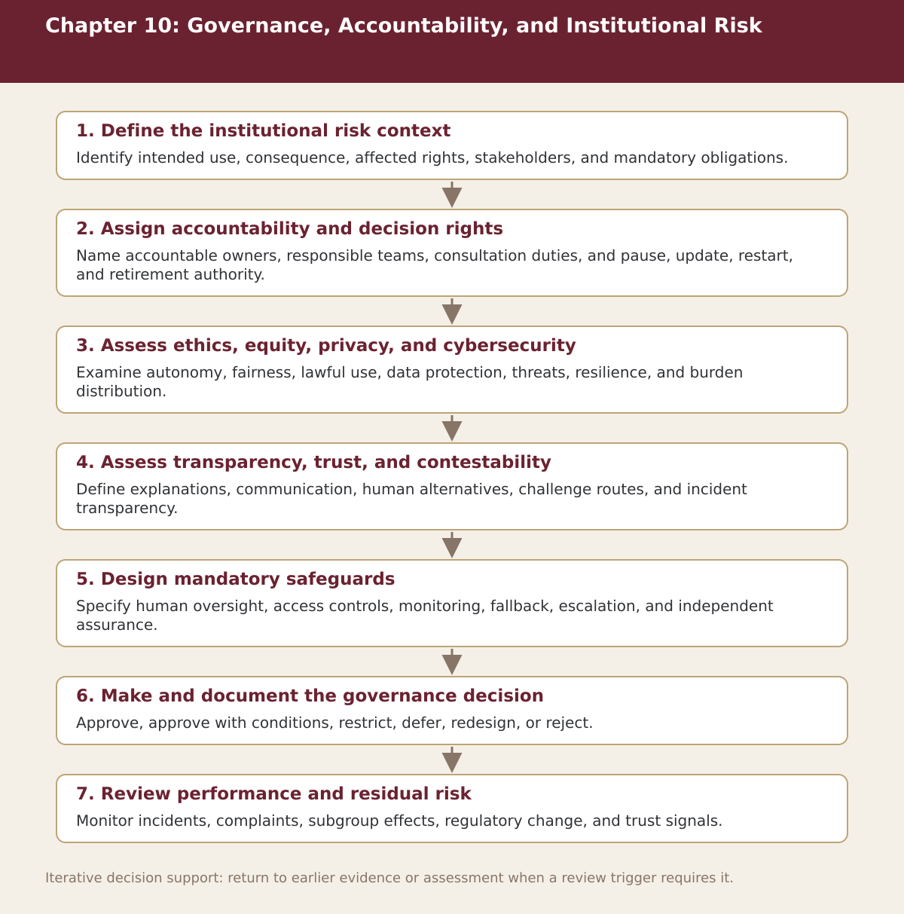

Chapter 10
Governance, Accountability, and Institutional Risk
Chapter-level process map linking the chapter’s decision questions to the companion resources and decision gates.

Process steps
| Step | Stage | Purpose | Required Input | Expected Output | Decision Or Gate |
|---|---|---|---|---|---|
| 1 | Define the institutional risk context | Identify intended use, consequence, affected rights, stakeholders, and mandatory obligations. | Local evidence and the prior approved step | Versioned record for: Define the institutional risk context | Proceed, revise, escalate, restrict, or stop as appropriate |
| 2 | Assign accountability and decision rights | Name accountable owners, responsible teams, consultation duties, and pause, update, restart, and retirement authority. | Local evidence and the prior approved step | Versioned record for: Assign accountability and decision rights | Proceed, revise, escalate, restrict, or stop as appropriate |
| 3 | Assess ethics, equity, privacy, and cybersecurity | Examine autonomy, fairness, lawful use, data protection, threats, resilience, and burden distribution. | Local evidence and the prior approved step | Versioned record for: Assess ethics, equity, privacy, and cybersecurity | Proceed, revise, escalate, restrict, or stop as appropriate |
| 4 | Assess transparency, trust, and contestability | Define explanations, communication, human alternatives, challenge routes, and incident transparency. | Local evidence and the prior approved step | Versioned record for: Assess transparency, trust, and contestability | Proceed, revise, escalate, restrict, or stop as appropriate |
| 5 | Design mandatory safeguards | Specify human oversight, access controls, monitoring, fallback, escalation, and independent assurance. | Local evidence and the prior approved step | Versioned record for: Design mandatory safeguards | Proceed, revise, escalate, restrict, or stop as appropriate |
| 6 | Make and document the governance decision | Approve, approve with conditions, restrict, defer, redesign, or reject. | Local evidence and the prior approved step | Versioned record for: Make and document the governance decision | Proceed, revise, escalate, restrict, or stop as appropriate |
| 7 | Review performance and residual risk | Monitor incidents, complaints, subgroup effects, regulatory change, and trust signals. | Local evidence and the prior approved step | Versioned record for: Review performance and residual risk | Proceed, revise, escalate, restrict, or stop as appropriate |